Reducing Attributes and Rows
MIDS W209: Information Visualization
Andy Reagan | andy[at]andyreagan.com |@andyreagan
https://johnguerra.co/lectures/MIDS_W209_Information_Visualization/06_Tabular/

What We Are Going to Learn
Reduce Items and Attributes
Reduce Items and Attributes
- Reduce / Increase: inverses
- Filter
- Pro: straightforward and intuitive
- To understand and compute
- Con: out of sight, out of mind
- Pro: straightforward and intuitive
- Aggregation
- Pro: inform about whole set
- Con: difficult to avoid losing signal
- Not mutually exclusive
- Combine filter, aggregate
- Combine reduce, change, facet
Item Filtering
Crossfiltering
- Item filtering
- Coordinated views/controls combined
- All scented histogram bisliders update when any ranges change
Faceted Search
Idiom: Scented Widgets
- Augmented widgets show information scent
- Cues to show whether value in drilling down further vs looking elsewhere
- Concise use of space: histogram on slider

Scented widgets paper
Navio

Attribute Filtering
DOSFA Paper
http://www.cs.ubc.ca/~tmm/courses/cpsc533c-04-spr/readings/dimorder.pdfNavio Load Notebook
UMAP Playground
Dimensionality Reduction
Aggregation: Hierarchichal cluster explorer
Item Aggregation
Idiom: Histogram
- Static item aggregation
- Task: find distribution
- Data: table
- Derived data
- New table: keys are bins, values are counts
- Bin size crucial
- Pattern can change dramatically depending on discretization
- Opportunity for interaction: control bin size on the fly
Idiom: Boxplot
- Static item aggregation
- Task: find distribution
- Data: table
- Derived data
- 5 quant attribs
- Median: central line
- Lower and upper quartile: boxes
- Lower upper fences: whiskers
- Values beyond which items are outliers
- Outliers beyond fence cutoffs explicitly shown
Box Plot
http://blockbuilder.org/mbostock/4061502by mbostockViolin plot
http://blockbuilder.org/asielen/92929960988a8935d907e39e60ea8417by asielenIdiom: 2D density plots
- Scatter-plot meet heat-map
- derived data
- Teselate space info areas
- Count number of elements falling on that area
- Mark: Dots (boxes)
- Channels:
- Position: Location of areas
- Color (brightness): Number of elements
- marks (re-)ordered by cluster hierarchy traversal
- Tasks: Summarize distribution.
- Scalability:
- Millions of rows (might require preprocessing)
Interactive Density Plot
Idiom: Hierarchical Parallel Coordinates
- Dynamic item aggregation
- Derived data: hierarchical clustering
- Encoding:
- Cluster band with variable transparency, line at mean, width by min/max values
- Color by proximity in hierarchy
Spatial Aggregation
Geo level
- Country
- State
- City
- Neighborhood
Aggregation Problems
- MAUP: Modifiable Areal Unit Problem
- gerrymandering (manipulating voting district boundaries) is only one example!
- zone effects
- scale effects
Overlapping
- Zip Codes
- Disputed borders
Regions
- Aggregate by commonalities
- e.g. Agricultural vs Industrial Regions
- e.g. Historically right vs left wing
- Aggregate by the data attributes
Geo patterns vs political patterns
- Risaralda example
Time Aggregation
Date Part vs Truncate
- Date Part: extract a part of the date
- Date Truncate: cut the date at a certain level
Date Truncate
- Different levels can hide seasonality
- Sometimes too much detail is unnecessary
Date Part
- Useful for highlighting human patterns
- Weekends
- Night time
- Holidays
- Summer vs Winter
Calendar Views
Dimensionality Reduction
Dimensionality Reduction
- Attribute aggregation
- Derive low-dimensional target space from high-dimensional measured space
- Capture most of variance with minimal error
- Use when you can’t directly measure what you care about
- True dimensionality of dataset conjectured to be smaller than dimensionality of measurements
- Latent factors, hidden variables
Dimensionality Reduction for Documents
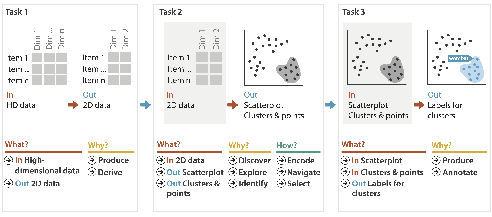Dimensionality vs. Attribute Reduction
- Vocab use in field not consistent
- Dimension/attribute
- Attribute reduction: reduce set with filtering
- Includes orthographic projection
- Dimensionality reduction: create smaller set of new dims/attribs
- Typically implies dimensional aggregation, not just filtering
- Vocab: projection/mapping
Estimating True Dimensionality
- How do you know when you would benefit from DR?
- Consider error for low-dim projection vs. high-dim projection
- No single correct answer; many metrics proposed
- Cumulative variance that is not accounted for
- Strain: Match variations in distance (vs. actual distance values)
- Stress: Difference between interpoint distances in high and low dims
Estimating True Dimensionality
- Scree plots as simply way: error against # attribs
- Original dataset: 294 dims
- Estimate: Almost all variance preserved with less than 20 dims
Dimensionality Reduction and Visualization
- Why do people do DR?
- Improve performance of downstream algorithm
- Avoid curse of dimensionality
- Data analysis
- If look at the output: visual data analysis
- Improve performance of downstream algorithm
- Abstract tasks when visualizing DR data
- Dimension-oriented tasks
- Naming synthesized dims, mapping synthesized dims to original dims
- Cluster-oriented tasks
- Verifying clusters, naming clusters, matching clusters and classes
Linear Dimensionality Reduction
- Principal components analysis (PCA)
- Finding axes: first with most variance, second with next most, …
- Describe location of each point as linear combination of weights for each axis
- Mapping synthesized dims to original dims
![[http://en.wikipedia.org/wiki/File:GaussianScatterPCA.png]](https://en.wikipedia.org/wiki/File:GaussianScatterPCA.png){kind=link}
Nonlinear Dimensionality Reduction
- Pro: can handle curved rather than linear structure
- Cons: lose all ties to original dims/attribs
- New dimensions often cannot be easily related to originals
- Mapping synthesized dims to original dims task is difficult
- New dimensions often cannot be easily related to originals
- Many techniques proposed
- Many literatures: visualization, machine learning, optimization, psychology, ...
- Techniques: t-SNE, MDS (multidimensional scaling), charting, isomap, LLE,…
- t-SNE: excellent for clusters
- But some trickiness remains: http://distill.pub/2016/misread-tsne/
- MDS: confusingly, entire family of techniques, both linear and nonlinear
- Minimize stress or strain metrics
- Early formulations equivalent to PCA
t-SNE Explorations
http://distill.pub/2016/misread-tsne/Interactive T-SNE
Embed, Focus+Context
Embed: Focus+Context
- Combine information within single view
- Elide
- Selectively filter and aggregate
- Superimpose layer
- Local lens
- Distortion design choices
- Region shape: radial, rectilinear, complex
- How many regions: one, many
- Region extent: local, global
- Interaction metaphor
Idiom: DOITrees Revisited
- Elide
- Some items dynamically filtered out
- Some items dynamically aggregated together
- Some items shown in detail
Idiom: Fisheye Lens
- Distort geometry
- Shape: radial
- Focus: single extent
- Extent: local
- Metaphor: draggable lens
Fish eye
https://bost.ocks.org/mike/fisheye/by mbostockIdiom: Stretch and Squish Navigation
- Distort geometry
- Shape: rectilinear
- Foci: multiple
- Impact: global
- Metaphor: stretch and squish, borders fixed
Distortion Costs and Benefits
- Benefits
- Combine focus and context information in single view
- Costs
- Length comparisons impaired
- Network/tree topology comparisons unaffected: connection, containment
- Length comparisons impaired
- Effects of distortion unclear if original structure unfamiliar
- Object constancy/tracking maybe impaired
Exploratory Data Analysis (EDA)
What's in the data?
Tukey
Exposure, the effective laying open of the data to display the unanticipated, is to us a major portion of data analysis. Formal statistics has given almost no guidance to exposure; indeed, it is not clear how the informality and flexibility appropriate to the exploratory character of exposure can be fitted into any of the structures of formal statistics so far proposed.
Nothing - not the careful logic of mathematics, not statistical models and theories, not the awesome arithmetic power of modern computers - nothing can substitute here for the flexibility of the informed human mind. Accordingly, both approaches and techniques need to be structured so as to facilitate human involvement and intervention.
Summary statistics
- Useful to look at clean data, that you understand & trust.
- Can be misleading.
- Remember the datasaurus!
Data munging
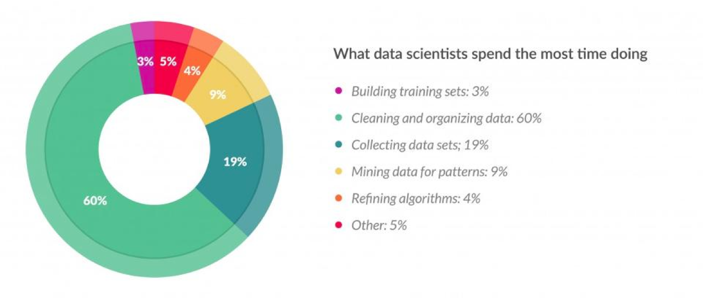60%
Data munging
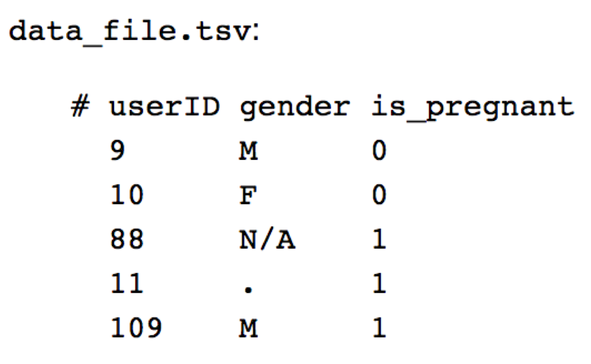Data munging
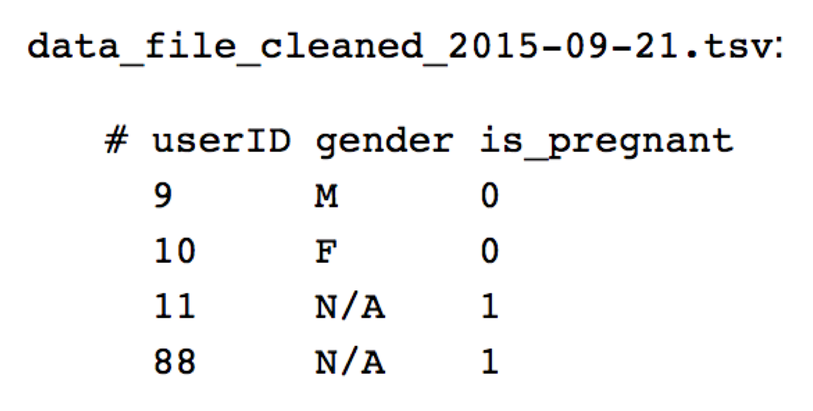Data quality hurdles
- Missing Data.
- Erroneous Values.
- Type Conversion.
- Entity Resolution.
- Data Integration.
More bad data
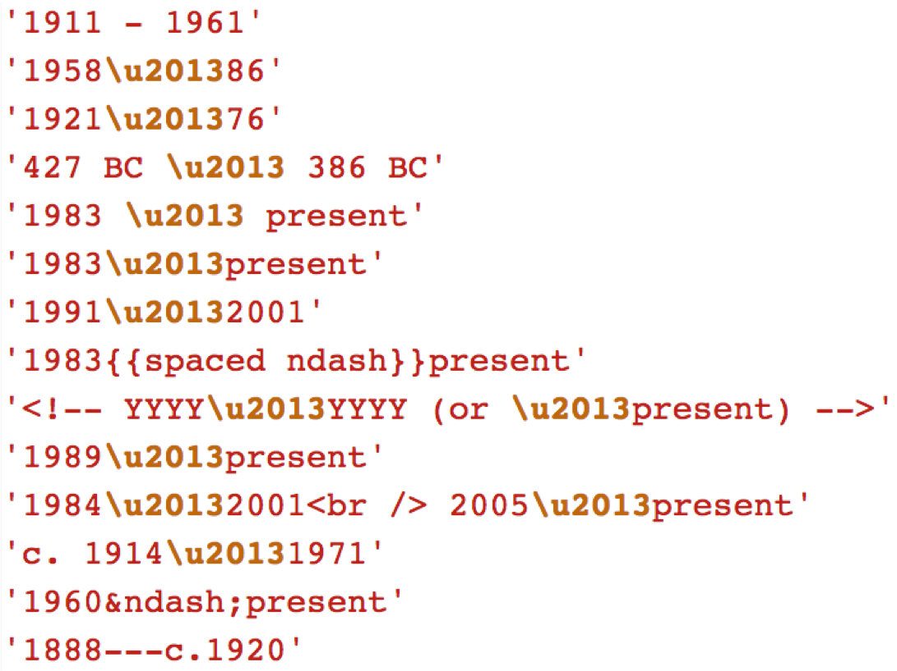Data filtering
The first sign that a visualization is good is that it shows you a problem in your data.
Wattenberg
Data Tranformations and Iteration
Looks like this:
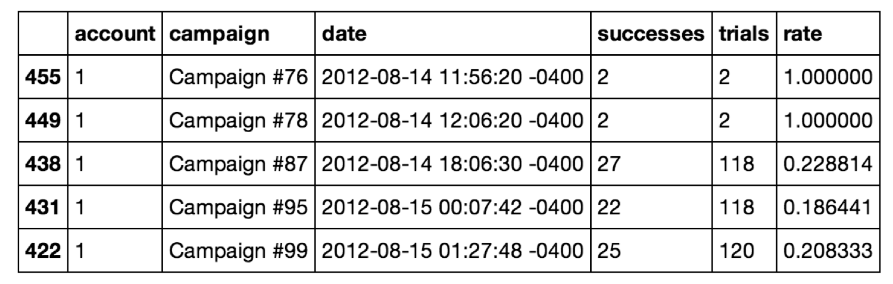Think of it as a data cube:
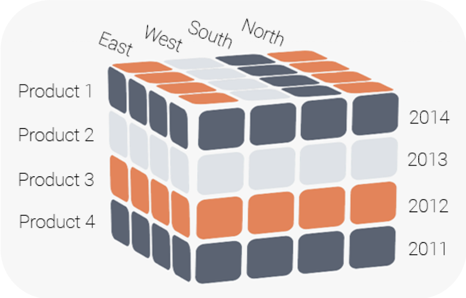Common transformations
- Normalize.
- Log.
- Power.
- Binning.
- Grouping.
Histograms, histograms, histograms
An cornerstone in the EDA toolbox!
“Above all else show the data” -Tufte
Correlation
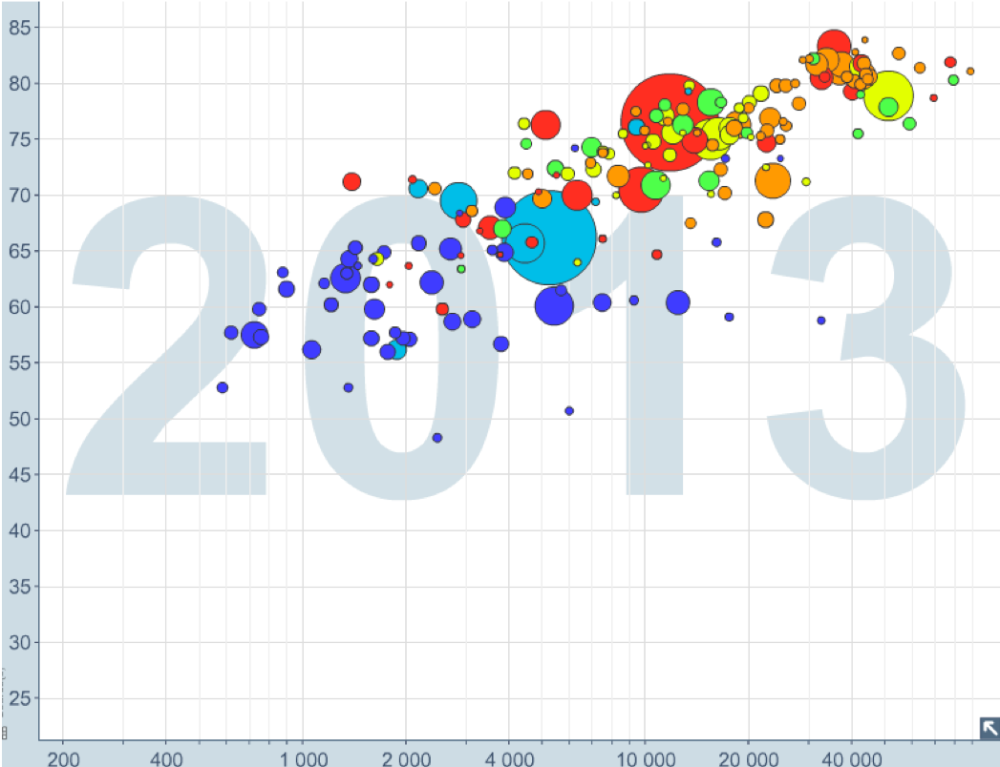Hypothesis generation
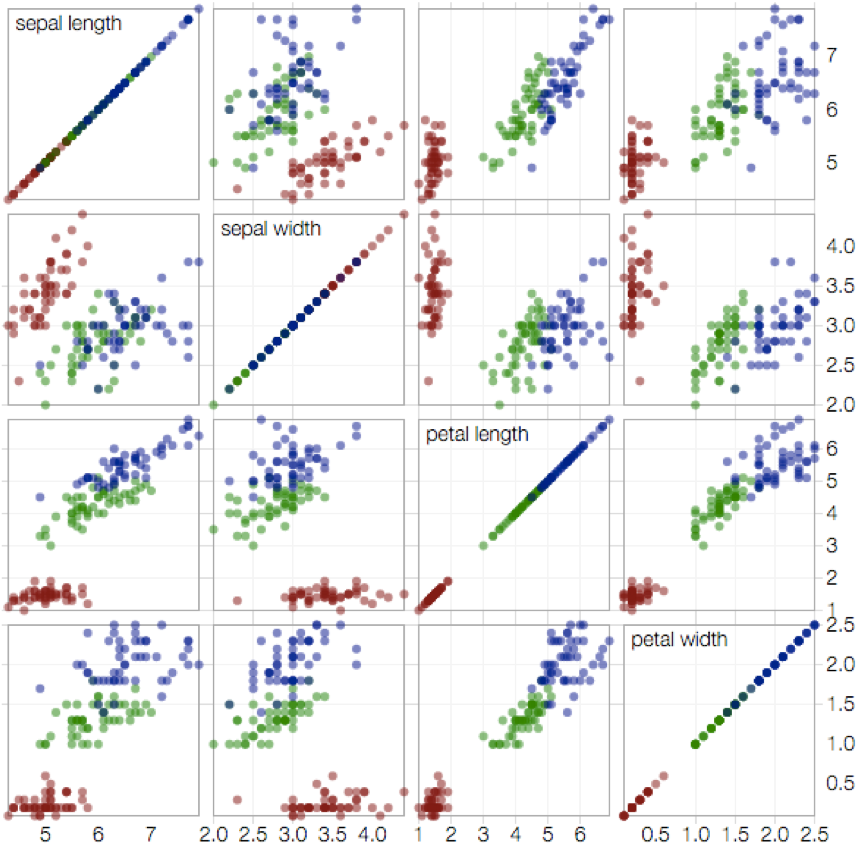Mantras
- Be skeptical: what assumptions have been made?
- Explore iteratively: start simple, keep asking questions.
- Avoid fixation: use a variety of graphics to inspect more angles.
Paradoxes
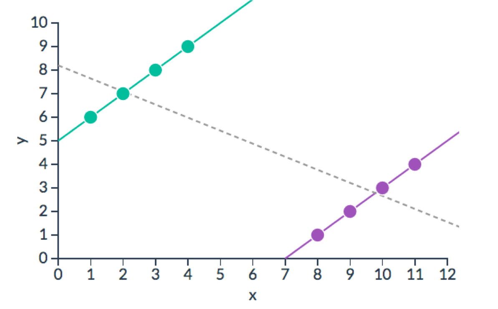Which one has the real data?
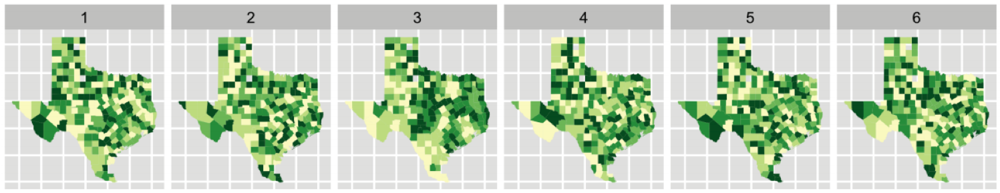
Iteration demo